Telehealth Session for a Patient
You can launch an encrypted Telehealth (Zoom™) session for a patient directly from the Patient Summary Panel.
Setup
- Contact TIMS Support at 800-763-0308 with any questions. They will assist you in setting up the TIMS software with the initial necessary Encrypted Zoom credentials.
 Note: TIMS does not directly support Encrypted Zoom - please see Zoom online help for assistance in operating that software.
Note: TIMS does not directly support Encrypted Zoom - please see Zoom online help for assistance in operating that software. - Click here to learn more about Encrypted Zoom security and HIPAA.
- https://blog.zoom.us/wordpress/2020/04/01/a-message-to-our-users/
- https://zoom.us/docs/doc/Zoom-hipaa.pdf
- If each provider who will be conducting Telehealth sessions does not already have a Zoom Account, create a free one here: https://zoom.us/signup. (see example) Do not sign in with Google or FaceBook, these are not supported yet.
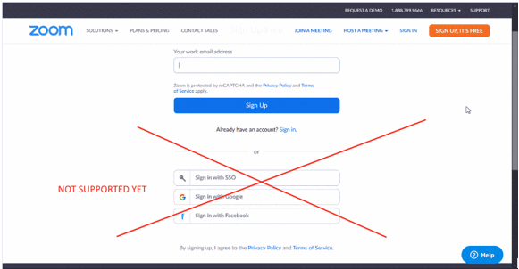
- In Provider Setup, enter the Zoom credentials for each provider.
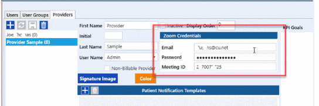
- You will need the Zoom Email used, Password and Meeting ID. You can find the Meeting ID from the Zoom profile page. The Meeting ID will be the same for all of the provider's telehealth sessions.

- If either the practice or provider credentials are not properly configured, you will receive the following error message if you attempt to launch a telehealth session:
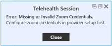
Launch Telehealth Session
- With the patient selected on the Patients Tree, click the Telehealth icon
 on the Patient Summary Panel. The patient does not need to have a Zoom account, however if they are using a mobile device (phone or tablet, for example), they will need to first download and install the Zoom application. No download is needed for a PC or laptop.
on the Patient Summary Panel. The patient does not need to have a Zoom account, however if they are using a mobile device (phone or tablet, for example), they will need to first download and install the Zoom application. No download is needed for a PC or laptop.
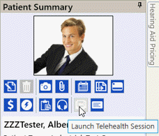
- If the practice and provider are properly configured, the Telehealth Session window and the Zoom meeting screen will popup.
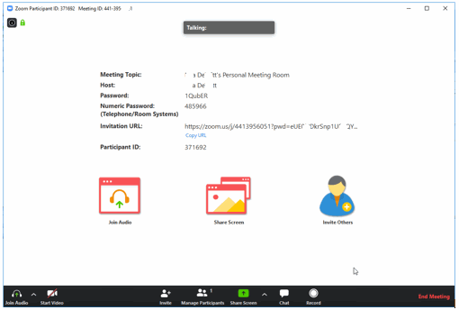
- You can send the patient a meeting invitation from the Telehealth Session window OR the Zoom meeting screen. You can send the meeting invitation any time in advance of the meeting. The link will not change unless you change your Zoom account password in the meantime. If that happens, you will need to send a new invitation link.
- From Telehealth Session window:
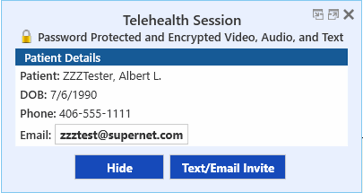
- Click the Text/Email Invite button to either Text or Email the patient an invitation link to the session. Note: To use this feature, the practice must be enrolled in Automated Appointment Notification service. Contact TIMS Support at 800-763-0308 for more information (fees applicable). The Send Patient Message screen will pop up with the Message field pre-populated with the URL link. Choose both Email and Text or either one.
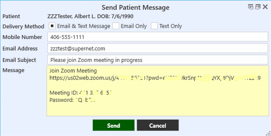
- Mobile number and Email Address will default to what has been entered in the patient's details. However, these can be changed to something different for a one-time message, if needed. You can also add any additional text to the message as needed. Text messages will include a note instructing the patient not to reply to the sender.
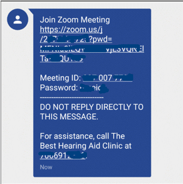
- Click the Send button - a message will pop up when they are successfully sent.
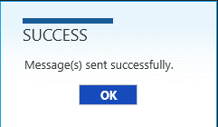
- From the Zoom meeting screen: click the Invite Others button.
From here you can choose one of the email services to use, or copy the URL or invitation directly into your own email.
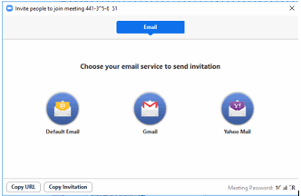
- When the patient has clicked the invitation URL link, you will see a popup message that they have entered the Waiting Room. Click Admit to start the session with them. The session can be conducted via video, audio only, or chat.
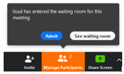
Conducting the Telehealth Session
- You can record the meeting by clicking the Record button at the bottom of the screen. You can stop and restart the recording multiple times if necessary.
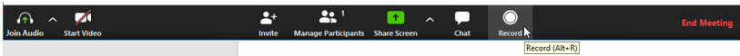
- While the meeting is in session, you can still access all the screens in TIMS as normal. You can share your screen with the patient by clicking Share Screen (an audiogram, or report for example).
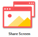
Ending the Telehealth Session
- When you are finished, click End Meeting in the lower right corner.
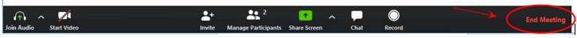
- If you have recorded the meeting, TIMS will prompt you to archive all recordings made.
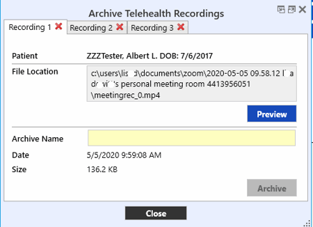
- You can first discard any of them by clicking the Red X next to the recording number.
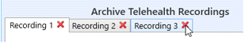
- You will be prompted to verify, click Yes or No to cancel.
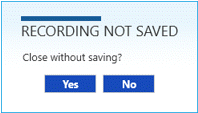
- Click the Preview button to view the recording before archiving it. Type a Name for the meeting, then click the Archive button to save the encrypted video.
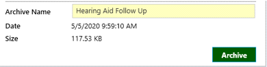
- Whether you have recorded the meeting or not, you will be prompted to add a Telehealth Interaction for the patient.
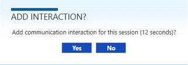
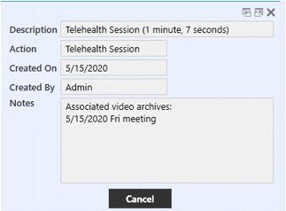
- If a recording has been archived, it will be indicated in the Notes. Telehealth Interactions will be automatically included in any Chart Note prints for the patient.
- Previously recorded meetings and Telehealth interactions can be viewed from the Patient Activity panel. You can save the video recording as a file to another location, or delete it by right-clicking on the activity line.
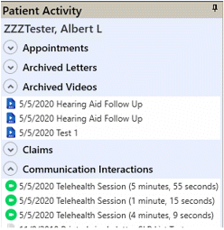
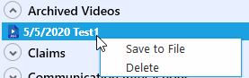